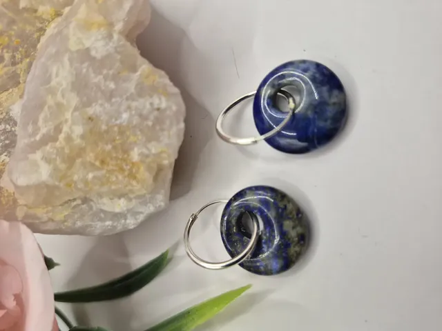
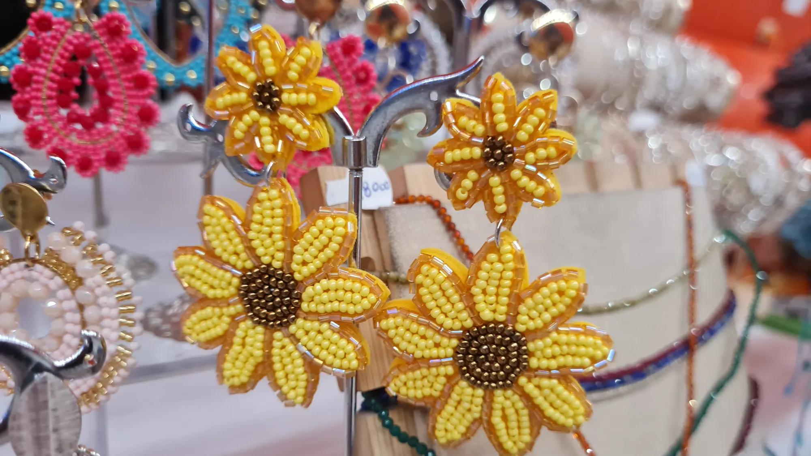
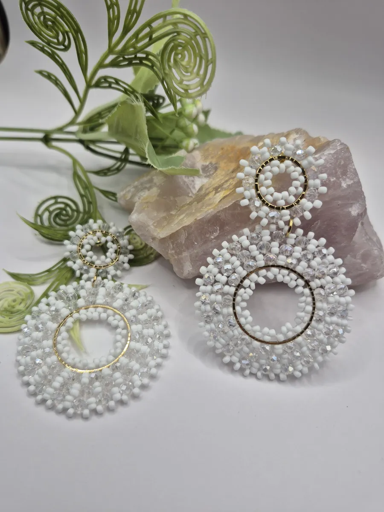
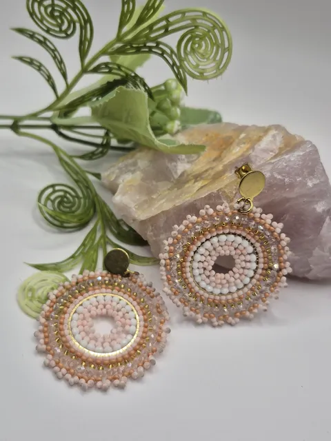
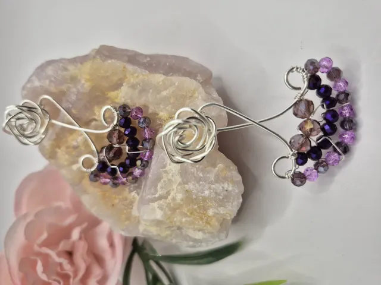

Técnica I
Plata con piedras
Piedras naturales engastadas o enhebradas en plata. Cada piedra es distinta, por eso cada pieza también lo es.

Detrás de cada pieza hay una sola persona: María Angélica Venegas, que diseña, teje y vende cada joya.

Durante años, tejer y armar joyas fue un pasatiempo. A inicios de 2022 María Angélica decidió compartir sus piezas y empezó a venderlas, aprendiendo nuevas técnicas con cada temporada.
Hoy trabaja con plata y piedras naturales, mostacilla Miyuki y alambrismo. Sus piezas se pueden encontrar en estaciones de metro, en ferias de emprendedoras y ahora también en esta tienda en línea.
Cada pieza que ves aquí la hice yo, de principio a fin.
Ninguna pieza se compra terminada para revenderla. Todo se diseña y se elabora en el taller.
Cada encargo se crea según la persona: su intención, sus colores y las piedras que la acompañan.
Como terapeuta holística, María Angélica orienta la elección de cada piedra según lo que buscas.

Piedras naturales engastadas o enhebradas en plata. Cada piedra es distinta, por eso cada pieza también lo es.

Cuentas de vidrio japonesas, parejas y brillantes, tejidas punto a punto en mandalas, flores y telar.

Alambre doblado y tejido a mano para formar rosas, lunas y corazones, con cristales y piedras.
Revisa dónde estaré esta semana o escríbeme para coordinar.